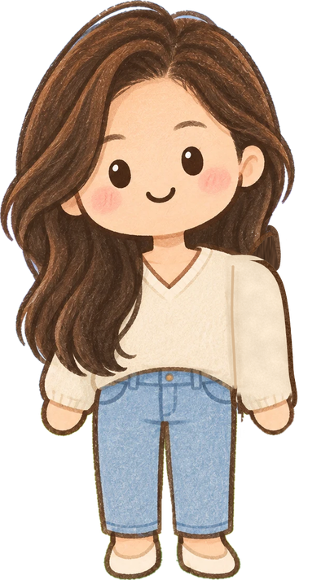
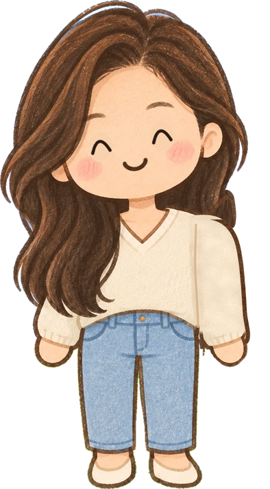

묻고, 확인하고,내 것으로!
AI와 함께 생각하는 연습
묻기확인하기나누고 고치기약속 하나
지난 편 · 타자 · 저장 · 컴퓨터 말 · 기본 공부
도움은 받되, 생각은 내 것으로


정주샘"과학 알려 줘" 하고만 물으면 어떤 답이 나올까요?
5연습 5 · 정답 주문 대신 필요한 도움 말하기
프롬프트 = AI에게 무엇을 도와주면 좋을지 전하는 말
"과학 알려 줘"
학습용 질문 예시물의 상태 변화를 공부하고 있어. '증발'이라는 말이 어려워. 쉬운 말과 일상 예로 설명해 줘. 마지막에는 내가 이해했는지 확인할 질문도 해 줘.
하려는 일
막힌 곳
원하는 도움

10
잠깐 퀴즈 · 가장 좋은 요청은?
분수 덧셈 숙제가 어려워요.어떤 요청이 가장 좋을까요?
①"숙제 다 해 줘."
②"분모가 다른 분수 덧셈이 어려워. 정답 말고 힌트를 줘."
③"아무거나 알려 줘."
하려는 일 · 막힌 곳 · 원하는 도움이 다 들어 있어요
6연습 6 · "정말 맞을까?" 확인하기
사실 하나 고르기AI가 사실로 말한 내용
원래 자료와 비교교과서 · 발표한 기관의 자료
누가 썼지?
언제 쓴 자료지?
원문에도 그렇게?
"정말이야?" 다시 묻기 · 출처 이름과 링크 · 여러 AI가 같은 말
그것만으로는 부족해요
그것만으로는 부족해요
"아직 확인하지 못했어요."라고 적어도 돼요
한쪽으로 치우친 시선은 없나? 빠뜨린 처지·의견은?
7연습 7 · 큰 일을 작게 나누고, 고쳐 보기
과제: 우리 동네 소개 자료 만들기"완성해 줘!" 하기 전에 나눠 봐요
1무엇을 소개할지
2자료 찾기
3맞는지 확인
4글과 그림 배치
5보여 주고 고치기
나누고 · 순서 세우고 · 시험해 보기 = 컴퓨팅 사고로 이어지는 힘
기기 없는 연습 · 종이 위 로봇 길친구에게 순서대로 설명하고, 엉뚱한 곳에 도착하면 어떤 지시를 고칠지 찾기
10
잠깐 퀴즈 · 출처 확인하기
AI가 출처를 알려 줬어요.어떻게 확인할까요?
①AI에게 "정말이야?" 하고 다시 묻는다
②원래 자료를 찾아 그 문장을 직접 읽는다
③링크가 있으니 그대로 믿는다
링크보다, 그 자료에 정말 그 말이 있는지!
AI에게 요청해 볼 도움 네 가지
학교와 서비스 이용 조건이 허용할 때 · 활용 제안이지, 정확하게 해 준다는 보장은 아니에요
1
설명 바꿔 듣기
"이 말이 어려워. 더 쉬운 말로 설명해 줘."
2
힌트 받기
"정답을 바로 말하지 말고 다음에 살펴볼 것을 알려 줘."
3
내 글 점검하기
"내 생각은 바꾸지 말고, 읽기 어려운 부분을 짚어 줘."
4
생각 넓히기
"다르게 생각하는 사람은 어떤 질문을 할까?"
하지 않은 관찰을 했다고 쓰기 · AI 글을 내 글처럼 내기 ✕
과제의 약속 따르기 · 어떤 도움을 받았는지 밝히기
과제의 약속 따르기 · 어떤 도움을 받았는지 밝히기
샘샘교실이 제안하는 연습 순서
내가 먼저
해 보기
해 보기
필요한
도움 받기
도움 받기
확인하기
화면을 덮고
내 말로 설명
내 말로 설명
혼자 시작하기 어려우면 사람·보조 도구와 함께 첫 단계부터
나와 친구를 지키는 사용 약속
이용 나이 · 보호자 동의 조건부터 확인해요 · 서비스마다 달라요
예) ChatGPT는 13세 미만 어린이의 직접 이용을 전제로 하지 않아요어른이 입력하고, 나는 질문을 만들고 답을 살펴봐요 OpenAI 도움말 · 2026-10-24 확인
비밀번호
집 주소
전화번호
학교·이름
친구 얼굴·목소리
놀리거나 속이려는 가짜 사진·목소리·글은 만들지 않아요
아프거나 괴롭힘 → 보호자·선생님께잠·놀이·친구 시간이 줄면 → 어른과 함께 조정
10
잠깐 퀴즈 · 넣어도 되는 것은?
AI에게 독후감 도움을 받을 때넣어도 되는 것은 무엇일까요?
①내 이름과 학교, 반
②내가 읽고 정리한 줄거리
③친구 얼굴 사진
나와 친구를 알아볼 수 있는 정보는 빼요
오늘부터 하나만 골라 해 봐요
문장 쓰고 고치기저장하고 다시 열기책 내용을 내 말로
궁금한 것을 구체적인 질문으로AI의 말을 원래 자료와 비교
컴퓨터·가입 없이도 · 종이 질문 · 도서관 · 친구에게 설명
버튼 위치보다, 새 도구를 만나도 묻고 살피는 힘
무엇을 묻고 무엇을 확인할지 생각하는 어린이


정주샘 · 서영샘도움은 받되, 생각은 내 것으로!